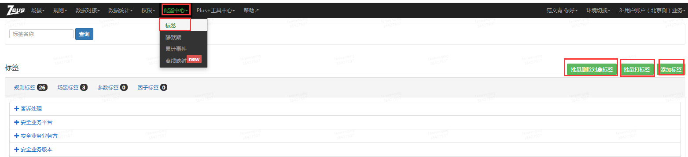
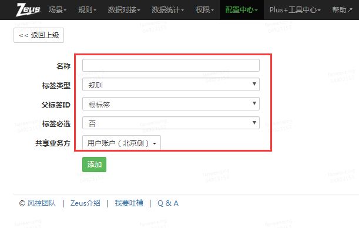
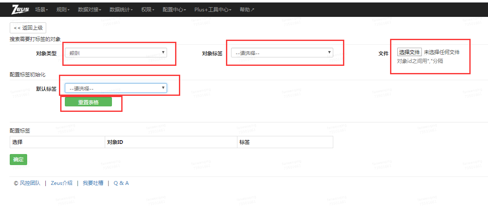
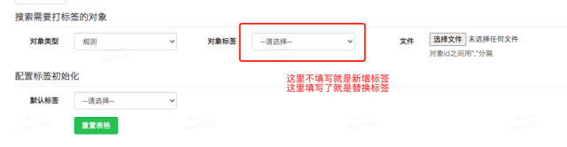
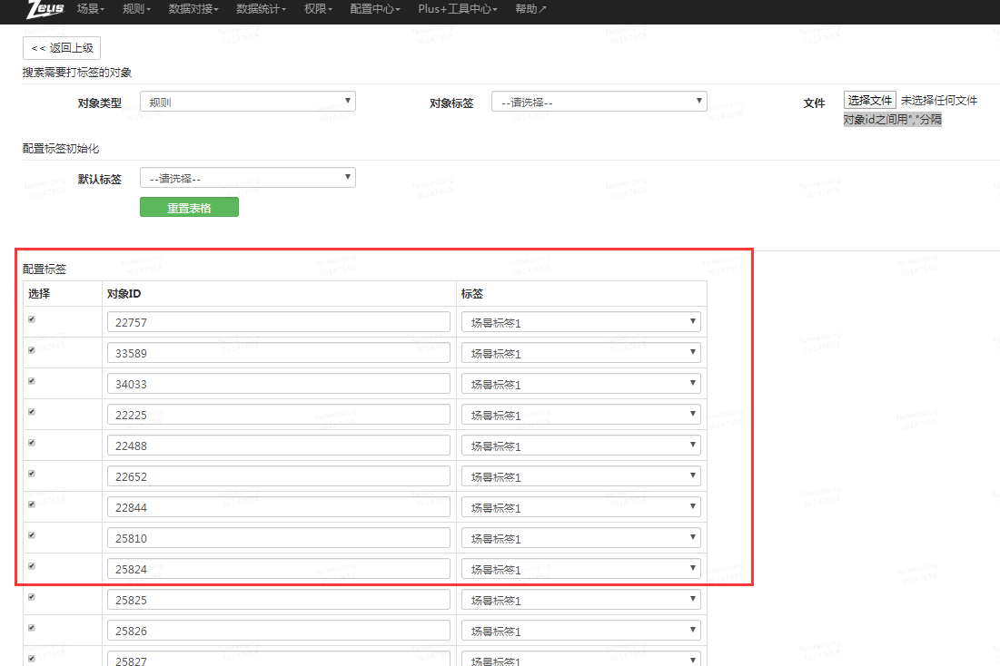
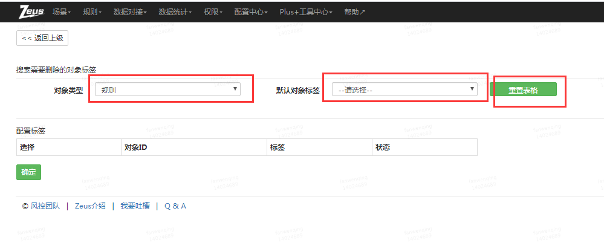

（废）说明：标签使用手册
文档已废弃，请移步新版 说明：Zeus标签管理
1.背景
随着风控规则、活动场景数量越来越多，维护成本日益增加，为解决上述问题，推出标签体系，为规则和活动场景分类。标签有多重分类维度，且分类维度有可能会新增，不同业务会有不同的分类维度，以反作弊为例，按公司业务分类：支付、早餐、外卖；按新人属性分类，如纯新客、品类新客、非新客等。总结下标签有如下作用：
- 方便批量处理：出现参数异常，相关规则批量设置为不生效；新增活动场景，可按照标签批量添加规则
- 查询、统计需求：提供查询接口用于统计分析
2.操作说明
2.1 入口
配置中心->标签

2.2 添加/创建新标签
在标签页面点击 添加标签，填写要创建的新标签的信息，包括 名称、标签类型、父标签ID、标签必选、共享业务方，点击 添加 即可；
名称：自定义；
标签类型：规则/场景/参数/因子，选择一种类型；
父标签ID：默认创建的标签为父标签/根标签，如果创建的标签是现有标签的子标签，可以在此选择父标签（父标签/根标签与子标签之间的关系类似于一级分类和二级分类，这样设定是便于标签的管理；需要注意的是：在规则/场景/参数/因子中添加标签时，添加的是父标签，如果父标签下面有子标签的话会再选择父标签下面的的某个子标签）
标签必选：默认否，如果选择 是 表明在创建规则/场景/参数/因子时该标签是必选项；
共享业务方：把该标签共享给谁；

2.3 为规则/场景/参数/因子打标签
2.3.1 批量打标签
在标签页面点击 批量打标签，首先搜索需要打标签的对象，填写搜索条件： 对象类型（规则/场景/参数/因子，选择一种）、对象标签、上传要搜索的对象的ID（txt格式，对象id之间用","分隔）；
然后配置标签初始化，选择 默认标签 （不选择某个标签：查询出来的对象的标签不会改变，要手动一个一个去打标签；选择某个标签：查询出来的对象会被批量打上选择的这个标签，也可以再次手动进行修改）；

Tips:

完成之后点击 重置表格，按照 上面填写的查询条件和标签配置初始化的选择内容，打标签的对象会以标签可编辑的状态列表展示在下方，可以手动添加/修改对象的标签，打完标签后，选择要提交的对象（列表中每条对象前面有选择框，勾上即可），点击列表下方的 确定，批量打标签操作 完毕；

2.3.2 在创建规则/场景/参数/因子的过程中打标签
见具体 规则/场景/参数/因子 的创建文档说明：创建/修改规则、说明：创建/修改场景、说明：创建/修改参数、说明：创建/修改因子；
2.4 批量删除对象标签
在标签页面点击 批量删除对象标签，首先搜索需要删除标签的对象，填写搜索条件： 对象类型（规则/场景/参数/因子，选择一种）、对象标签；

完成之后点击 重置表格，按照 上面填写的查询条件，需要删除标签的对象会以标签状态可编辑的状态列表展示在下方，可以手动修改标签状态（保留或者删除），确定之后选择要提交的对象（列表中每条对象前面有选择框，勾上即可），点击列表下方的 确定，批量删除对象标签操作 完毕；